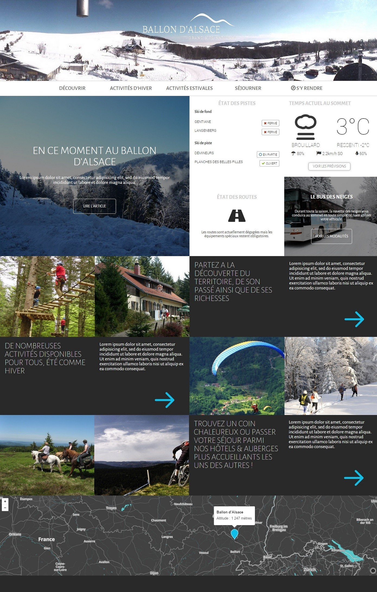
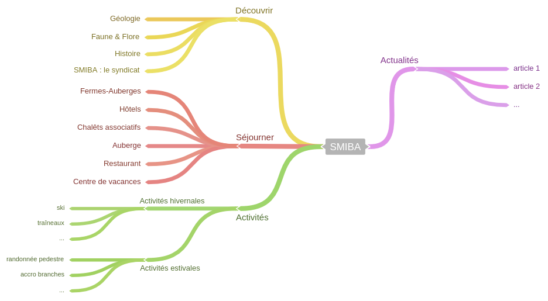

Le site touristique du Ballon d'Alsace présente les différentes activités à voir ou à faire au sommet, les modes de séjour et d'hébergements proposés. De plus, le site offre une découverte virtuelle de l'histoire, de la géologie et de la géographie des lieux.
L'objectif est de retravailler le design du site en proposant de nouvelles façons de présenter l'information.
Voir le siteConception
Développement
Intégration
La webcam panoramique est un appareil installé sur le toit de l'hôtel au sommet du Ballon d'Alsace. Il retransmet heure par heure une photographie panoramique de du sommet. On peut y voir d'un coup d'oeil le temps qu'il fait là-haut et l'état d'enneigement en hiver. Cette information se devait d'être accessible dès l'entrée sur le site, sur l'en-tête, et non caché par l'intermédiaire d'un hyperlien comme sur le site actuel.
La météo en direct est également visible dès la page d'accueil grâce à l'intégration de l'API de forecast.io.
L'accent est mis en priorité sur l'actualité du moment, avec un lien vers l'article phare. L'état des pistes et des routes en hiver sont aussi mises en avant, sous forme d'un tableau indicatif.
Les liens et descriptifs des différents thèmes qui forment le contenu du site sont exposés ensuite.
Un nouveau plan du site est dessiné. On compte désormais quarte grandes catégories de pages.
Ces quarte catégories sont : les articles, les pages détaillant les activités estivales et hivernales, les pages de découverte comme la faune et la flore au Ballon d'Alsace ou sa géologie, et enfin les pages regroupant les infos sur les différents modes d'hébergement & de restauration.
Ce projet a été réalisé au cours de ma formation en Licence Professionnelle de Web Design.